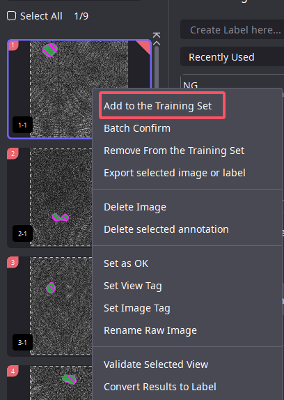

Getting Started
1. Application Scenarios of the Segmentation Module
1.1 Segmentation Principle
It classifies each pixel based on the texture features (gray value, contrast, texture, shape, etc.) of the defects and is not sensitive to the geometric quantitative features such as the size, length, and width of the defects. However, defect standards often describe the quantitative geometric features of defects. Therefore, if defects with the same texture features are labeled into different categories according to their size, length, width, and position during labeling, confusion will occur during the model training process, and the final model metrics will be poor.
1.2 Segmentation Scenarios
Based on the pixel-level detection function, it can accurately identify defects (especially small defects). It is suitable for detecting fine appearance defects such as scratches, dents, and cracks.
image1：Detection of appearance defects of parts
1.3 Example of Defect Labeling for Segmentation Module Detection
image1: Scratch - Irregular Defect
image 2: Stain - Low - Contrast Defect
image 3: Black Spot - Small Proportion in the Image

image 4: Product Counting - Detect obvious product features and calculate the number of products
image 5: Product Edge Detection
2. Practical Getting Started
2.1 Display of Software Interface Areas
1、Labeling Type Switch
You can switch between display modes, defect labeling mode, key learning area labeling, and non - learning area labeling.
2、Labeling Tool Options
You can select different labeling tools to facilitate the labeling of defects with different shapes.
3、Project Management Area
You can switch between different AIDI projects opened in the software.
4、Module Operation Area
You can add and delete AI modules.
5、Image List Area
You can view the thumbnails of the imported images in the software and perform operations such as filtering the training set and test set.
6、Image IO Area
You can import and export image data.
7、Three Major Functional Areas
7.1 Labeling Management Area
You can manage the labels in the project.
7.2 Training and Inference Area
You can adjust the model training and inference parameters.
7.3 Evaluation
Here you can see the relevant metrics and tools for evaluating the model.
2.2 Creating a Project
Open AIDI, click “File” in the upper - left corner of the software and select “New Project”. In the project management window, click “Load Others” to complete the creation of the workspace. Then, select the workspace in the project management window, right - click and select “New Project”, enter the project name and select the project type, and click “Confirm” to complete the project creation and enter the project.
Note
Create new projects in the workspace. On - site projects should be created in one workspace to improve maintenance and management efficiency.
It is recommended to use PNG and BMP images instead of JPG images.
The software supports the import of images within 30000 * 30000. If the size exceeds this range, it is recommended to use other traditional algorithm tools to crop the images before inputting them into the AIDI software.
2.3 Loading Images
In the “Input” node, click “Import Images” to add the image data necessary for training the model. The images in the input node serve as the original data for all subsequent modules, so be cautious when deleting them.
2.4 Selecting the Module - Segmentation
2.4.1 Selecting an AI Module
First, click the “+” on the right side of the “Input” node to open the add - module window, and then click the “+” on the right side of “Segment” to add the module.
2.4.2 View Window
It is used to select the defect detection area. (If the defects may appear anywhere in the image, there is no need to change the detection area. Just click “Apply”.) After determining the detection area, click “Apply”. After entering the module, the area outside the view range will be masked to avoid interference from the area outside the view on the model recognition effect.
Display of the Segmentation Module Interface
2.5 Defect Data Labeling
2.5.1 Setting Labels
In the label management section of the labeling management area, enter the label names and press Enter on the keyboard. Set the names of the defects or targets to be labeled one by one. Double - click on a label (annotation) to modify its name, click the delete icon behind the name to delete it, and change two annotations to the same name to merge the labels (annotations).
2.5.2 Steps for Using the Defect Labeling Tool
Select the “Defect Labeling Tool”.
Select the “Circle Pen” (the use of the line pen and pen filling can refer to the user manual).
Directly smear on the image to draw a semi - transparent annotation (green) and select the label.
Modify the brush size by manually entering the value or using the A and D keys to increase or decrease it.
Press CTRL + S or S to save the annotation. After saving, it will automatically jump to the next image.
The eraser tool can clear the annotation (located on the left side of the brush size).
Press CTRL + Z to undo the annotation.
In addition to general labeling, the segmentation module also supports OK images for training positive samples. The usage method is select an image in the image list, right - click, and set it as an OK image.
The quality of the labeling determines the upper limit of the model’s recognition. Incorrect labeling will lead to poor model learning results.
2.5.3 Precautions for Defect Labeling
When annotating, keep the annotation close to the edge of the defect contour, with a deviation of about 3% in each direction. For example, if the long side of a defect is 100 pixels and the short side is 10 pixels, an error of 3 pixels is allowed in the long - side direction, while only 1 pixel of error is allowed in the short - side direction. For defects with blurred boundaries, annotate the clearest visible edge to the naked eye. Do not annotate based on the physical object, but on the image. Avoid over - annotation, under - annotation, and incorrect annotation of defect categories.
The image data in the training set should preferably meet the following requirements:
Comprehensive defect categories
The training set should include all types of defects.Complete defect morphology
The shape, size, position, angle, brightness, contrast, etc., of the defects should be as diverse as possible.
The minimum number of each morphology is 30 images.Consistent image sizes in a single project.
Remove images with obviously identical defects.
2.5.4 Correct Examples of Defect Annotation
2.6 Training Set Partitioning Methods
Method 1
After all images are annotated, select Data Partitioning in the Model Training Assistant. According to the set ratio, the training set and the test set of the specified ratio are randomly selected in the software. As shown in the figure, the proportion is 70%, which means that 70% of the labeled data is used as the training set and 30% is used as the test set.
Method 2
In the image list, right-click the image to add it to the training set. After the first training of the model is completed, it is necessary to manually select 4-5 representative images that are missed by / after using "Method 2" and add them to the training set for optimization. You cannot use "Method 1" to select the training set. If the model is not effective, you need to use 2 methods to select images into the training set multiple times to optimize the model.

Test set, with red markings on the upper right corner of the thumbnail.
Training set, with a green mark in the upper right corner of the thumbnail.
It is recommended to label a minimum of 30 images in the training set of the segmentation module.
2.7 Training parameter settings
Select the appropriate parameters for model training/inference.
After the training parameters are changed, you need to click the training button to take effect after completing the training
**Training rounds **
The commonly used settings range is between 400-3000, and the number of training rounds is gradually increased. If the training set is not effective, add 400 training times to the original number of training rounds each time. The number of commonly used training rounds on the spot is 1,200.**Training batch **
Set up several training images as a batch for model training . The larger the batch, the higher the video memory footprint, and the model effect can be improved . If it is prompted that the video memory is insufficient, reduce the training batch.**Training mode **
Regular mode
Use training sets for learning, a commonly used method on site.
Incremental training
Add a new training set, which can be trained based on the previous model.
Accuracy level
Auto-adaptation:
The software automatically calculates the appropriate accuracy based on the proportion of the annotated defects in the image.Manual settings:
Change the Accuracy Level parameter to improve the accuracy of model recognition. It is recommended to start with 1 and gradually increase. The higher the accuracy level, the longer the training/inference time. (Common methods on site)
For example, if the image size is 1024*512, the accuracy level is set to 1. The short side of the image is scaled to 256*1=256 in size, and the long side is scaled to 512 in equal proportions. The short side of this image is 512, so the accuracy is set to a maximum of 2. It is necessary to ensure that the image is scaled according to the set accuracy level, and that the defect has a size of 5*5 on the scaled image.
Geometry/image augmentation：
By augmenting the training set pictures according to the settings, the training set is randomly transformed according to the parameters during the training process, increasing the model’s ability to identify defects in different states. Place the mouse in the “!” and “Gear” icons, and you can view the effect after parameter settings. A reference example of geometry/image augmentation settings is shown in the figure below：
Example 1
Detection defect product diagram
Example of corresponding geometric augmentation parameter setting
Example 2
Detection defect product diagram
Example of corresponding geometric augmentation parameter setting
2.8 Training/Inference
After completing the training parameter setting, click the training button. After the training is completed, an inference will be automatically performed, or if you click the inference button, the inference result will be rendered as the shaded area in the figure.
When the software counts the over- and under-checked indicators, the images that have been labeled are counted by the software for over- and under-checked indicators, and the images that have not been labeled need to be viewed manually for inference results.
During the training process, training needs to be stopped. You can click the “Stop” button in the training progress bar in the upper right corner to terminate model training. Try not to cancel model training in the project site, as the model cannot continue training after it is terminated, and stopping training in the middle may lead to poor final results.
2.9 Analyze the results and optimize
2.9.1 Training Inference - Inference parameter settings
After the parameter is changed, you need to click the inference button to take effect after the inference is completed, and the inference parameters are described as follows.
1.Inference Mode
(1).Quick start
fast start speed, average inference speed; (General scenario, usage mode).
(2).Fast Processing
The first time startup is slow, not the software is stuck, the reasoning speed is the fastest; (Using mode in high-speed scenarios. It may cause incomplete recognition results).
(3).Fast-Precision
The first time startup is slow, not the software is stuck, the inference speed is between fast startup and extreme inference; (It is recommended to use the mode on the project).
2.Filtering parameters:
The area of different categories of defects can be filtered, the minimum external rectangle long side / short side, and the range.
2.9.2 Evaluation page
After completing the training task, in the “Evaluation” page, you can visually obtain the training result data, which is convenient for the statistics of the model results.
Accuracy： The higher the accuracy, the fewer the region-level over-checks.
Recall Rate： The higher the Recall Rate, the lower the number of misses at the regional lev.
You can also use the filter rules of the image list to quickly screen out images such as missed detection, over detection, and false detection, and select samples with representative features to be added to the training set to optimize the model effect.
Confusion matrix is a commonly used model evaluation tool, with vertical directions being manually annotated and horizontal directions being the result of reasoning. The region level can view the misjudgment situation between categories, and click the confusion matrix to quickly filter out data such as pass-check, missed, and misjudgment. The “regional-level” confusion matrix is commonly used at the project site to determine whether the model has passed/missed detection.
Confusion matrix horizontal: Manually mark defect categories
Confusion matrix Vertical: Model inference defect category
Confusion area level: Calculate the defect labeling area and the model identification area. The overlap rate is less than 0.3, which means that the model in this area is missed.
Confused picture level: Perform the result judgment on the entire image.
The single-image test shown in the model details is used to evaluate the inference time of the project model, which is an important parameter to evaluate the ability to meet the on-site cycle requirements.
Since other software on-site industrial control machines usually occupy part of the computer resources, during the project evaluation stage, it is necessary to add about 20% of the time margin based on the “single graph test time-average value”. When using one computer, reasoning for multiple models. The model inference time is the addition of multiple models “single graph test-average value”.
In the training process curve, since the calculated values are calculated according to pixels, the model recognition results and labeling results cannot reach pixel level alignment, so the index cannot reach 1. When the on-site training curve converges well, the defective pixel recall and accuracy are around 0.9.
2.10 Export AI models and vs projects
2.10.1 Model export
When the model effect meets the detection requirements, select the “Model Export” option and set the Directory and Model Name. The model file is saved to a specified path for on-site deployment and use. As shown in the figure below:
2.10.2 Model and sample code export
You can export a simple sample project. As shown in the figure below:
3、Practical advancement
3.1 Non-learning area usage scenarios
Field images often have blurred areas where OK and NG cross each other. Labeling the fuzzy region as NG, the model may over-detect the OK region, labeling the fuzzy region as OK, the model may under-detect the NG region.
Different people have different categories for determining the same defect, so different people have different standards for labeling. As shown in the figure below.
Defect distribution
Non-learning area labeling tool
Example of a non-study area project:
Detect dirty areas on the image because there is dirty interference in the product itself. Therefore, AIDI can be used to mark the obviously dirty areas as NG, and the fuzzy areas are marked with no learning tools.
The marking criteria for areas not learning: cover the target area, label the defect edge, and the deviation direction is about 10%. As shown in the figure below
image 1 : Original image
image 2 : Label images in non-learning areas
3.2 Labeling interference items to reduce interference
Method 1: As shown in the figure below, the steel plate is divided into two upper and lower areas. The shaded area on the upper side is a non-use area and defects are allowed, The bright white area on the lower side is a use area and defects are not allowed.
The reference scheme is as follows
Add a “NoDetectionArea” label to the segmentation module to mark the undetected area, the red area in the picture.
Set a larger filter parameter for the area of the “NoDetectionArea” in the test parameters to filter out the undetectable area.
3.3 View usage
1.Block interference
The product fixes the area on the image, reduces the area of the model detection, and then uses the mask function in the view to block out areas outside of the defect detection.
2.Large-size image detection
AIDI software only supports image import within 30000*30000. If the image exceeds this size, first use traditional algorithms to crop the image into this size. When the view area on the project is larger than the size of 2000*2000, and the defect is relatively small, the model training time will be relatively long. Therefore, it is necessary to cut the large picture into multiple parts in the view, and then give the model to learn.
The specific method is as follows：
Select the view box in the AIDI software view tool.
Select the “Divide” button to crop the view into multiple copies equally, and set the horizontal/vertical interval to a negative value to avoid the situation where the defect is exactly on the clipping line.
After cropping, the maximum size of each view should be about 2000*2000 as much as possible.
When the model is online, the user will pass the image to AIDI normally to the model inference, and the result coordinates are the passed original image coordinates.
3.Normalization of images of different sizes
If you use AI model training on the project, it is recommended to use the same image for model training /inference. When training tasks for images of different sizes cannot be avoided, the view size should be adjusted based on the maximum image size imported, and the view area will be input into the AI model. If the image size is smaller than the view, the software will automatically fill black pixels around the image, so that images of different sizes can achieve normalization effect.
Refer to the following steps:
Select the view area
At the top of the view, according to the maximum size image you imported, set “By pixel, width, height, lateral offset, vertical offset, offset angle” to ensure that all images are within the view, and then click “Apply”.
3.4 Tag application scenarios
If you tag “Image/View” in the software, you can use the “Image/View Tag Search” function in the image list area to filter out the category “Image/View”.
Common usage scenarios are as follows:
1.Date marking
In the early stage, due to the adjustment of the machine, the defect form of the model training is quite different from that of the later stage. Label the time tags of the images imported at different times, and the time points of the imported image data can be filtered out, thereby deleting the images that are more different from the defects in the production process.
2.Test set filtering
In the test set, it is necessary to focus on model identification effects. After labeling as tags, you can quickly filter out images and view effects after each training.
The image /view tag annotation method is as follows:
Right-click the image in the list and select “Set Image /View Tag”.
2.Select the “Add Tag” button, “Enter/Select tag” name, click “OK”, “Setting is complete! “. The final realization of the tag settings.
3.Filter tag search in the image list, set filter conditions, and quickly filter out tags of this category.
3.5 Module name modification
Usage scenario: After creating a new AI module, the module name is generally the default name. There may be multiple AI modules at the same level in the project, and the module name can be changed to defect name to facilitate maintenance and management of on-site personnel. Right-click the module name and select rename to complete the modification. The software is modified before and after as shown in the following figure.
Note: After modifying the module name in the software, the “model name” filled in by the secondary development call model should also be modified.
3.6 Shortcut keys
There are various shortcut keys in the software for easy user operation. For example, in “Annotation Mode”, press the spacebar to “Mask” and “Show Inference Results”, which is convenient for users to view the model effect. For more shortcut keys, see “AIDI - Help - Shortcut Information”.
4、Examples of common algorithm schemes
4.1 Algorithm pre-processing + AIDI segmentation example
The “pre-processing” method is usually used on the project site to reduce the interference of the background area to the model and improve the model recognition rate.
The common pre-processing methods are as follows：
Other AI modules: detection module, positioning module and segmentation module to identify product areas.
AIDI software: View window
Traditional algorithm methods: polar coordinate conversion, background consistency, etc.
Example 1: First use the detection module to identify the location of the product, and then use the segmentation module for defect identification. As shown in the figure below.
Example 2: First use the positioning module to identify the location of the product, and then use the segmentation module for defect identification .As shown in the figure below.
Use (detection /positioning) to identify the product detection area. Notes:
1、As shown in the figure below, the results of the rectangular frame of detection and positioning recognition will fluctuate. In the (Detection/Positioning) module back view window, you need to set the result width/height. Once all results are set to the same size, the effect of size fluctuations on the second module is reduced.
2、Detect the / positioning to identify two results appear in one position. You can set a lower target overlap rate and maximum target number in the inference parameters that detect / positioning.
Example 3: Use the segmentation module to identify the location of the product, and then use the segmentation module to identify defects. As shown in the figure below:
Example 4: When each product is fixed in the image position, you can use the AIDI view function to set the fixed area, extract the product for use, and then use the segmentation module for defect identification. As shown in the figure below.

Example 5: When the image is relatively large, use the AIDI view function to crop the image into multiple copies, and then use the segmentation module to identify defects on the small image, which can improve detection accuracy. The length and width of the image input model on the project site generally will not exceed 4,000. As shown in the figure below.
Example 6: When detecting a circular (torus) product, first use polar coordinate conversion, and then use the AIDI segmentation module to detect it. Advantages of polar coordinate conversion.
After the polar coordinates of products of different sizes are converted, the model interference caused by different sizes can be blocked.
Avoid defects without various angle changes in the image and improve model recognition rate.
image1: Image of the product before polar conversion
image 2: Image of the effect after polar conversion
image 3: AIDI annotation polar conversion image effect
Example 7: When the background of the detection product is complex, the traditional algorithm is used to harmonize the background first, and then the AIDI segmentation module is used to detect the product, which can improve the detection effect. Advantages after background consistency:
Remove the background and calibrate the angle of the product. Reduce model interference caused by product background changes.
The defect form is consistent, and products of different sizes are shared in one model, reducing deployment costs.
Background consistency renderings
Example of AIDI segmentation annotation
4.2 Example of AIDI segmentation + algorithmic post-processing
The project needs to calculate the curvature of the wire and determine whether it is NG by curvature. First, use the AIDI segmentation module to detect the wire, and then the traditional algorithm calculates the wire curvature value. Advantages of the algorithm:
Segmentation and detection of welded wires can effectively avoid reflection, weakness and blackening of welded wires, which leads to misjudgment problems of traditional algorithms.
The traditional algorithm calculates the degree of bending of the straight line by segmenting the detected contour information.